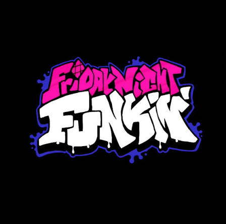
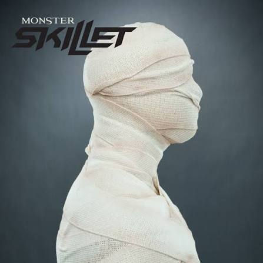

Criação de personagens:
Aqui você irá aprender a fazer um mod para Friday Night Funkin'.
Por:\n Gabriel Curti
Aprenda a criar seu próprio mod aqui.

Aqui você irá aprender a fazer um mod para Friday Night Funkin'.
Por:\n Gabriel Curti

"Monster" alcança mais de 1b streams no Spotify
Por:\n Gabriel Curti